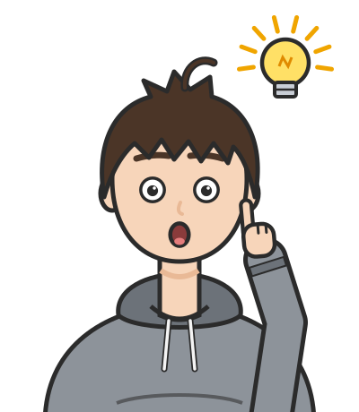

리만 곡률 텐서는 n차원에서 n2(n2−1)/12개의 독립 성분을 가진다. 2차원에서는 1개, 3차원에서는 6개, 그리고 4차원 — 우리가 사는 시공간의 차원 — 에서는 20개다. 이 20개의 숫자가 한 점에서의 곡률을 완전히 기술한다. 하지만 이 모든 정보를 항상 다 들고 다녀야 하는가?
일상에서 비슷한 상황을 떠올려 보자. 100명으로 이루어진 집단의 시험 성적을 기술하려면 100개의 숫자가 필요하다. 하지만 실제로 우리가 자주 쓰는 것은 평균, 분산, 중앙값 같은 요약 통계량이다. 정보는 잃지만, 핵심은 남긴다. 곡률 텐서에서도 같은 전략이 가능할까?
더 구체적으로, 아인슈타인이 일반상대성이론의 장방정식을 세울 때 직면한 문제가 바로 이것이었다. 물질의 에너지-운동량 텐서 Tij는 대칭 2차 텐서로 독립 성분이 10개다. 이것을 4차 텐서인 리만 곡률(20개 성분)과 직접 등치시킬 수는 없다. 곡률의 적절한 "요약"이 필요했다. 20개를 10개로 압축하되, 물리적으로 의미 있는 방식으로.
리치 텐서: 리만 곡률을 한 번 축약한 요약
100명의 성적을 평균 하나로 줄이듯, 첨자 네 개짜리 곡률 텐서를 첨자가 더 적은 무언가로 줄일 수 있을까? 줄인다면 무엇을 남기고 무엇을 버려야 할까?
역사: 그레고리오 리치-쿠르바스트로 (Gregorio Ricci-Curbastro, 1853–1925)
리만 곡률 텐서가 존재한다는 것을 리만이 보였지만, 이것을 체계적으로 다루는 계산 언어를 만든 사람은 리치-쿠르바스트로다. 파도바 대학 교수였던 리치는 1880년대부터 "절대 미분학(calcolo differenziale assoluto)"을 개발한다 — 좌표에 의존하지 않는 텐서 연산의 체계.
리치의 핵심 아이디어 중 하나가 축약이다. 4개의 첨자를 가진 리만 곡률 텐서 Rijkl에서, 첫째와 셋째 첨자를 합산하면 2개의 첨자를 가진 텐서가 남는다: Rjl=Rijil. 이것이 리치 텐서다. 곡률의 완전한 정보를 담고 있지는 않지만, "측지선 다발의 부피가 어떻게 변하는가"라는 직관적 의미를 갖는다.
리치 자신은 이 텐서에 특별한 물리적 의미를 부여하지 않았다. 그것은 20년 뒤 아인슈타인의 일반상대성이론에서 이루어진다.
대각합처럼 첨자를 짝지어 더하기
텐서의 성분들을 체계적으로 합산하는 **축약(contraction)**이라는 연산이 있다. 위 첨자와 아래 첨자를 하나씩 짝지어 합산하면, 텐서의 "등급"이 2만큼 줄어든다. 행렬의 대각합(trace)이 가장 친숙한 예시다: n×n 행렬(2차 텐서)의 대각 성분을 합하면 하나의 수(0차 텐서)가 된다.
리만 곡률 텐서 Rijkl에 이 전략을 적용하자. 첫째 첨자와 셋째 첨자를 짝지어 합산하면 2차 텐서가 남는데, 이것이 리치 텐서다.
4차원에서는 4차 텐서의 20개 성분이 대칭 2차 텐서의 10개 성분으로 압축된다. 그렇다면 정보가 사라진 것일까? 사라졌다. 리치 텐서가 포착하지 못하는 나머지 10개 성분의 정보는 바일 텐서 Cijkl에 담긴다(이 장 끝에서 다시 만난다).
리치 텐서가 재는 것은 측지선 다발의 부피 변화다. Rijvivj는 방향 v로 나란히 출발한 측지선 다발이 얼마나 빨리 모이는지를 알려준다. 양수이면 그 방향의 측지선들이 모이고, 음수이면 흩어진다. 이것이 왜 중요할까? 물질이 중력으로 끌어당기는 효과가 바로 이것이기 때문이다. 먼지 구름 속에서 자유낙하하는 입자들의 다발은 시간이 갈수록 모여 부피가 줄어드는데, 이것이 양의 리치 곡률이다. 반면 지구 바깥의 텅 빈 공간에서는 리치 곡률이 0이다. 거기서 자유낙하하는 물방울은 부피를 유지한 채 지구 쪽으로 길쭉해지고 옆으로는 가늘어질 뿐인데, 이 모양 변화는 뒤에 나오는 바일 텐서의 몫이다.
리치 텐서 (부피 변화율 / Volume Growth Rate, Rij) — 곡률 텐서 Rkikj를 첫째와 셋째 첨자에 대해 축약한 대칭 2차 텐서. 한 점에서 각 방향으로 측지선 다발의 부피가 얼마나 빠르게 변하는지를 알려준다. 리치 텐서가 0이면 — 리치 평탄(Ricci-flat) — 부피는 유클리드 공간에서처럼 변한다. 진공에서의 아인슈타인 방정식은 정확히 Rij=0이다.
ML에서: 그래프 신경망의 병목
리치 곡률의 "나란히 출발한 측지선이 모이는가 흩어지는가"라는 뜻은 점과 선만 있는 그래프에도 옮겨 쓸 수 있다. 한 간선의 두 끝점 이웃들이 많이 겹치면 양의 곡률, 두 끝점에서 뻗는 이웃이 서로 멀리 흩어지면 음의 곡률로 본다. 토핑(J. Topping) 등은 ICLR 2022 논문 "Understanding over-squashing and bottlenecks on graphs via curvature"에서, 그래프 신경망에서 멀리서 온 정보가 좁은 통로에 눌려 뭉개지는 현상(over-squashing)이 음의 곡률을 가진 간선에서 생긴다는 것을 보이고, 곡률을 보고 간선을 덧붙이는 재배선 방법을 제안했다. 여기서 움직이는 것은 그래프 위를 흐르는 메시지이고, 곡률은 그 흐름이 어디서 막히는지를 알려 준다.
문제 1 — 요약이 원본보다 크다?
각 문제를 먼저 혼자 풀어 본 뒤, 바로 아래 세션에서 선생님과 두 학생이 어떻게 풀어 가는지 따라가 보자.
확인 2차원 곡면에서 리만 곡률 텐서의 독립 성분은 1개뿐인데, 리치 텐서는 대칭 2×2 행렬이라 성분이 3개다. 요약이 원본보다 정보가 많아 보이는데, 어디가 잘못된 생각인가?
같이 풀기 세션 1
김민준
이건 진짜 이상해요. 구면 좌표로 numpy에서 리치 텐서를 뽑으면 Rθθ, Rθϕ, Rϕϕ 세 개가 나오거든요. 리만은 하나라면서요. 그럼 리치가 정보가 더 많은 거 아니에요?
선생님
그 세 숫자를 저한테 불러 줘 볼래요? 반지름 r인 구에서요.
김민준
1, 0, sin2θ요.
이서연
그거 계량이랑 똑같은 모양이잖아. gθθ=r2, gϕϕ=r2sin2θ니까 리치는 계량을 r2로 나눈 거야.
선생님
그럼 질문을 바꿔 볼게요. 계량을 이미 알고 있다면, 그 세 숫자를 알려 주려면 숫자를 몇 개 더 알려 주면 되죠?

김민준
하나요. 나누는 수 1/r2만 알면 나머지는 계량에서 다 나오네요. 세 개가 아니라 사실상 하나였어요.
선생님
맞아요. 2차원에서는 언제나 Rij=Kgij예요. 곡률 쪽 정보는 가우스 곡률 K 하나뿐이고, 성분이 셋처럼 보이는 건 계량이 곱해져 있어서예요. 성분의 개수와 독립적인 정보의 개수는 다를 수 있어요.
김민준
조교님이 보고서 분량 채우려고 같은 표를 단위만 바꿔서 세 번 붙이면 한 번으로 친다고 했던 거랑 같네요. 칸 수가 늘었다고 내용이 늘어난 게 아니었어요.